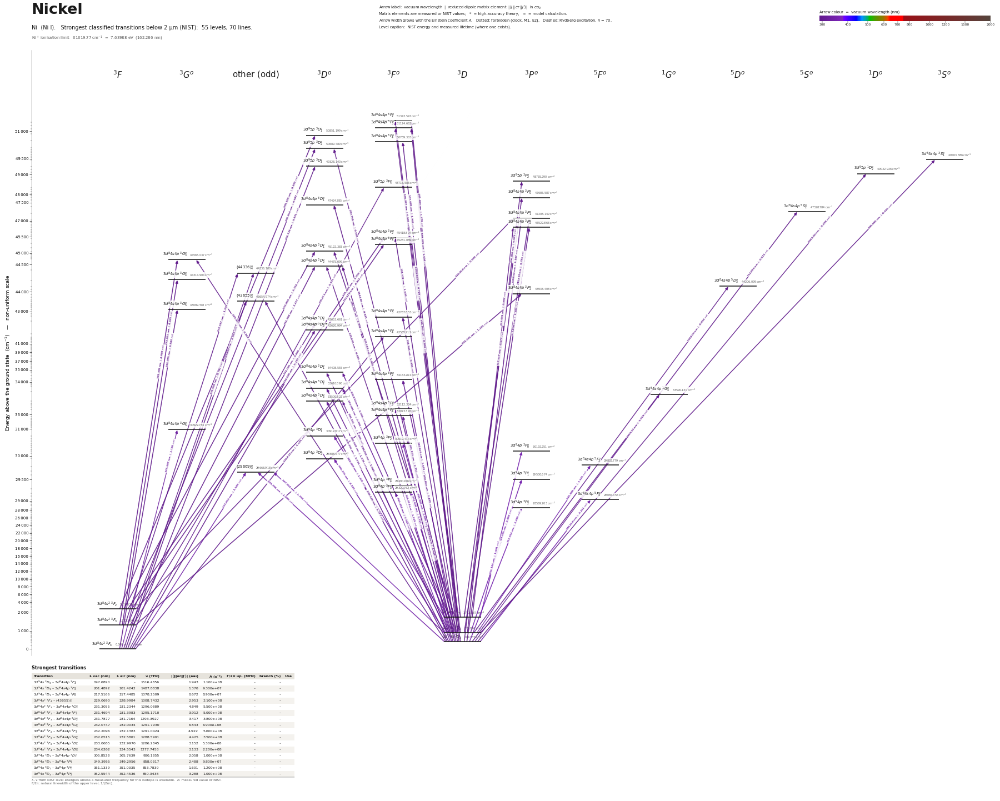

Nickel energy level diagram
Energy levels and transitions of neutral nickel (Ni I): the 70 strongest classified lines below 2 µm from the NIST Atomic Spectra Database and the 55 levels they connect, each line with its vacuum wavelength, frequency and, for 70 of them, the reduced dipole matrix element derived from the NIST transition rate. Lifetimes, hyperfine constants and isotope shifts from the literature have not been compiled for this element yet.
Hover a line or a level to isolate it, click to keep it selected. Scroll to zoom, drag to move.

Download: diagram (PDF) diagram (SVG) transitions (CSV) levels (CSV) source code

Strongest transitions of nickel
| Transition | λ vac (nm) | λ air (nm) | ν (THz) | |⟨J‖er‖J′⟩| (ea₀) | A (s⁻¹) | Γ/2π up. (MHz) | branch (%) | Use |
|---|---|---|---|---|---|---|---|---|
| 3d94s 3D3 – 3d84s4p 3F°4 | 197.6890 | – | 1516.4856 | 1.943 | 1.100e+08 | – | – | |
| 3d94s 3D1 – 3d84s4p 3F°2 | 201.4892 | 201.4242 | 1487.8838 | 1.370 | 9.300e+07 | – | – | |
| 3d94s 3D1 – 3d84s4p 3P°0 | 217.5166 | 217.4485 | 1378.2509 | 0.672 | 8.900e+07 | – | – | |
| 3d84s2 3F4 – (43655)°3 | 229.0690 | 228.9984 | 1308.7432 | 2.953 | 2.100e+08 | – | – | |
| 3d84s2 3F3 – 3d84s4p 3G°3 | 231.3055 | 231.2344 | 1296.0889 | 4.849 | 5.500e+08 | – | – | |
| 3d84s2 3F2 – 3d84s4p 3F°2 | 231.4694 | 231.3983 | 1295.1710 | 3.912 | 5.000e+08 | – | – | |
| 3d84s2 3F3 – 3d84s4p 3D°2 | 231.7877 | 231.7164 | 1293.3927 | 3.417 | 3.800e+08 | – | – | |
| 3d84s2 3F4 – 3d84s4p 3G°5 | 232.0747 | 232.0034 | 1291.7930 | 6.843 | 6.900e+08 | – | – | |
| 3d84s2 3F2 – 3d84s4p 3F°3 | 232.2096 | 232.1383 | 1291.0424 | 4.922 | 5.600e+08 | – | – | |
| 3d84s2 3F3 – 3d84s4p 3G°4 | 232.6515 | 232.5801 | 1288.5901 | 4.425 | 3.500e+08 | – | – | |
| 3d84s2 3F2 – 3d84s4p 3D°1 | 233.0685 | 232.9970 | 1286.2845 | 3.152 | 5.300e+08 | – | – | |
| 3d84s2 3F4 – 3d84s4p 3D°3 | 234.6262 | 234.5543 | 1277.7453 | 3.133 | 2.200e+08 | – | – | |
| 3d94s 3D1 – 3d84s4p 3D°1 | 305.8528 | 305.7639 | 980.1855 | 2.058 | 1.000e+08 | – | – | |
| 3d94s 3D2 – 3d94p 3P°1 | 349.3955 | 349.2956 | 858.0317 | 2.488 | 9.800e+07 | – | – | |
| 3d94s 3D1 – 3d94p 3P°0 | 351.1339 | 351.0335 | 853.7839 | 1.601 | 1.200e+08 | – | – | |
| 3d94s 3D3 – 3d94p 3P°2 | 352.5544 | 352.4536 | 850.3438 | 3.288 | 1.000e+08 | – | – |
λ, ν from NIST level energies unless a measured frequency for this isotope is available. A: measured value or NIST. Γ/2π: natural linewidth of the upper level, 1/(2πτ).
Listed Ni transitions below 2 µm
| Lower level | Upper level | λ vacuum (nm) | λ air (nm) | ν (THz) | Type | |⟨J‖er‖J′⟩| (ea₀) | A (s⁻¹) | Branching (%) | Source of matrix element / A |
|---|---|---|---|---|---|---|---|---|---|
| 3d94s 3D3 | 3d84s4p 3F°3 | 196.3870 | – | 1526.5394 | E1 | 0.536 NIST | 1.100e+07 NIST | – | NIST ASD (accuracy C) |
| 3d94s 3D3 | 3d84s4p 3F°4 | 197.6890 | – | 1516.4856 | E1 | 1.943 NIST | 1.100e+08 NIST | – | NIST ASD (accuracy C) |
| 3d94s 3D2 | 3d84s4p 3F°2 | 198.1621 | – | 1512.8646 | E1 | 0.500 NIST | 1.300e+07 NIST | – | NIST ASD (accuracy C) |
| 3d94s 3D2 | 3d84s4p 3F°3 | 199.0254 | – | 1506.3026 | E1 | 1.504 NIST | 8.300e+07 NIST | – | NIST ASD (accuracy C) |
| 3d94s 3D2 | 3d95p 3D°2 | 200.7642 | 200.6993 | 1493.2564 | E1 | 0.583 NIST | 1.700e+07 NIST | – | NIST ASD (accuracy C) |
| 3d94s 3D1 | 3d84s4p 3F°2 | 201.4892 | 201.4242 | 1487.8838 | E1 | 1.370 NIST | 9.300e+07 NIST | – | NIST ASD (accuracy C) |
| 3d84s2 3F3 | 3d95p 3D°2 | 202.6042 | 202.5390 | 1479.6954 | E1 | 0.687 NIST | 2.300e+07 NIST | – | NIST ASD (accuracy D) |
| 3d84s2 3F4 | 3d95p 3D°3 | 202.7240 | 202.6588 | 1478.8204 | E1 | 0.831 NIST | 2.400e+07 NIST | – | NIST ASD (accuracy C) |
| 3d94s 3D3 | 3d95p 1D°2 | 204.7999 | 204.7343 | 1463.8308 | E1 (intercombination) | 0.618 NIST | 1.800e+07 NIST | – | NIST ASD (accuracy C) |
| 3d84s2 3F4 | 3d95p 3F°4 | 205.2731 | 205.2074 | 1460.4565 | E1 | 0.611 NIST | 9.700e+06 NIST | – | NIST ASD (accuracy C) |
| 3d84s2 3F2 | 3d95p 3D°1 | 205.6147 | 205.5489 | 1458.0301 | E1 | 0.652 NIST | 3.300e+07 NIST | – | NIST ASD (accuracy C) |
| 3d94s 3D3 | 3d95p 3P°2 | 206.0560 | 205.9901 | 1454.9079 | E1 | 0.673 NIST | 2.100e+07 NIST | – | NIST ASD (accuracy D) |
| 3d94s 3D2 | 3d84s4p 3S°1 | 206.0854 | 206.0195 | 1454.7000 | E1 | 0.546 NIST | 2.300e+07 NIST | – | NIST ASD (accuracy E) |
| 3d94s 3D3 | 3d84s4p 5S°2 | 212.2061 | 212.1390 | 1412.7419 | E1 (intercombination) | 0.813 NIST | 2.800e+07 NIST | – | NIST ASD (accuracy C) |
| 3d94s 3D2 | 3d84s4p 3D°1 | 214.8460 | 214.7784 | 1395.3831 | E1 | 0.831 NIST | 4.700e+07 NIST | – | NIST ASD (accuracy C) |
| 3d94s 3D2 | 3d84s4p 3P°1 | 215.8506 | 215.7828 | 1388.8885 | E1 | 0.781 NIST | 4.100e+07 NIST | – | NIST ASD (accuracy C) |
| 3d94s 3D3 | 3d84s4p 3P°2 | 215.8984 | 215.8306 | 1388.5811 | E1 | 1.309 NIST | 6.900e+07 NIST | – | NIST ASD (accuracy C) |
| 3d94s 3D1 | 3d84s4p 3P°0 | 217.5166 | 217.4485 | 1378.2509 | E1 | 0.672 NIST | 8.900e+07 NIST | – | NIST ASD (accuracy E) |
| 3d94s 3D2 | 3d84s4p 3P°2 | 219.0914 | 219.0229 | 1368.3442 | E1 | 0.882 NIST | 3.000e+07 NIST | – | NIST ASD (accuracy C) |
| 3d94s 3D1 | 3d84s4p 3P°1 | 219.8041 | 219.7354 | 1363.9077 | E1 | 1.107 NIST | 7.800e+07 NIST | – | NIST ASD (accuracy C) |
| 3d84s2 3F2 | 3d84s4p 3P°1 | 222.2637 | 222.1946 | 1348.8142 | E1 | 0.598 NIST | 2.200e+07 NIST | – | NIST ASD (accuracy D) |
| 3d94s 3D2 | 3d84s4p 3F°2 | 224.5224 | 224.4528 | 1335.2453 | E1 | 1.030 NIST | 3.800e+07 NIST | – | NIST ASD (accuracy C) |
| 3d94s 3D3 | 3d84s4p 3G°3 | 225.4270 | 225.3572 | 1329.8868 | E1 | 0.867 NIST | 1.900e+07 NIST | – | NIST ASD (accuracy C) |
| 3d84s2 3F4 | (44336)°4 | 225.5498 | 225.4800 | 1329.1628 | E1 | 0.700 NIST | 9.600e+06 NIST | – | NIST ASD (accuracy C) |
| 3d94s 3D3 | 3d84s4p 3D°2 | 225.8850 | 225.8151 | 1327.1906 | E1 | 0.695 NIST | 1.700e+07 NIST | – | NIST ASD (accuracy C) |
| 3d94s 3D1 | 3d84s4p 3F°2 | 228.8030 | 228.7325 | 1310.2644 | E1 | 0.729 NIST | 1.800e+07 NIST | – | NIST ASD (accuracy D) |
| 3d84s2 3F4 | (43655)°3 | 229.0690 | 228.9984 | 1308.7432 | E1 | 2.953 NIST | 2.100e+08 NIST | – | NIST ASD (accuracy C) |
| 3d94s 3D2 | 3d84s4p 3D°2 | 229.3826 | 229.3119 | 1306.9537 | E1 | 1.064 NIST | 3.800e+07 NIST | – | NIST ASD (accuracy C) |
| 3d94s 3D3 | (43655)°3 | 230.1486 | 230.0778 | 1302.6038 | E1 | 1.777 NIST | 7.500e+07 NIST | – | NIST ASD (accuracy C) |
| 3d94s 3D1 | 3d84s4p 3D°1 | 230.3654 | 230.2945 | 1301.3780 | E1 | 0.902 NIST | 4.500e+07 NIST | – | NIST ASD (accuracy C) |
| 3d94s 3D2 | 3d84s4p 5D°3 | 230.8068 | 230.7358 | 1298.8893 | E1 (intercombination) | 0.824 NIST | 1.600e+07 NIST | – | NIST ASD (accuracy C) |
| 3d84s2 3F3 | 3d84s4p 3G°3 | 231.3055 | 231.2344 | 1296.0889 | E1 | 4.849 NIST | 5.500e+08 NIST | – | NIST ASD (accuracy C) |
| 3d84s2 3F2 | 3d84s4p 3F°2 | 231.4694 | 231.3983 | 1295.1710 | E1 | 3.912 NIST | 5.000e+08 NIST | – | NIST ASD (accuracy E) |
| 3d84s2 3F3 | 3d84s4p 3D°2 | 231.7877 | 231.7164 | 1293.3927 | E1 | 3.417 NIST | 3.800e+08 NIST | – | NIST ASD (accuracy C) |
| 3d84s2 3F4 | 3d84s4p 3G°5 | 232.0747 | 232.0034 | 1291.7930 | E1 | 6.843 NIST | 6.900e+08 NIST | – | NIST ASD (accuracy C) |
| 3d84s2 3F2 | 3d84s4p 3F°3 | 232.2096 | 232.1383 | 1291.0424 | E1 | 4.922 NIST | 5.600e+08 NIST | – | NIST ASD (accuracy E) |
| 3d84s2 3F3 | (44336)°4 | 232.5369 | 232.4655 | 1289.2256 | E1 | 1.003 NIST | 1.800e+07 NIST | – | NIST ASD (accuracy D) |
| 3d84s2 3F3 | 3d84s4p 3G°4 | 232.6515 | 232.5801 | 1288.5901 | E1 | 4.425 NIST | 3.500e+08 NIST | – | NIST ASD (accuracy C) |
| 3d84s2 3F2 | 3d84s4p 3D°1 | 233.0685 | 232.9970 | 1286.2845 | E1 | 3.152 NIST | 5.300e+08 NIST | – | NIST ASD (accuracy C) |
| 3d84s2 3F4 | 3d84s4p 3D°3 | 234.6262 | 234.5543 | 1277.7453 | E1 | 3.133 NIST | 2.200e+08 NIST | – | NIST ASD (accuracy C) |
| 3d84s2 3F3 | 3d84s4p 3P°2 | 234.7349 | 234.6631 | 1277.1532 | E1 | 1.325 NIST | 5.500e+07 NIST | – | NIST ASD (accuracy D) |
| 3d84s2 3F4 | 3d84s4p 3F°4 | 234.8233 | 234.7514 | 1276.6725 | E1 | 1.125 NIST | 2.200e+07 NIST | – | NIST ASD (accuracy D) |
| 3d94s 3D3 | 3d84s4p 3F°3 | 234.9455 | 234.8736 | 1276.0086 | E1 | 0.993 NIST | 2.200e+07 NIST | – | NIST ASD (accuracy E) |
| 3d84s2 3F3 | 3d84s4p 3D°2 | 242.0048 | 241.9313 | 1238.7873 | E1 | 0.836 NIST | 2.000e+07 NIST | – | NIST ASD (accuracy E) |
| 3d94s 3D2 | 3d84s4p 3D°1 | 298.2516 | 298.1646 | 1005.1663 | E1 | 1.049 NIST | 2.800e+07 NIST | – | NIST ASD (accuracy C) |
| 3d94s 3D3 | 3d84s4p 1G°4 | 299.5326 | 299.4453 | 1000.8674 | E1 (intercombination) | 1.019 NIST | 8.700e+06 NIST | – | NIST ASD (accuracy C+) |
| 3d94s 3D3 | 3d84s4p 3D°3 | 300.3361 | 300.2485 | 998.1900 | E1 | 2.736 NIST | 8.000e+07 NIST | – | NIST ASD (accuracy C+) |
| 3d94s 3D2 | 3d84s4p 3F°2 | 300.4496 | 300.3621 | 997.8127 | E1 | 2.149 NIST | 6.900e+07 NIST | – | NIST ASD (accuracy D) |
| 3d94s 3D3 | 3d84s4p 3F°3 | 303.8817 | 303.7932 | 986.5434 | E1 | 1.648 NIST | 2.800e+07 NIST | – | NIST ASD (accuracy C+) |
| 3d94s 3D3 | 3d84s4p 3F°4 | 305.1703 | 305.0816 | 982.3776 | E1 | 2.752 NIST | 6.000e+07 NIST | – | NIST ASD (accuracy C+) |
| 3d94s 3D2 | 3d84s4p 3D°2 | 305.5201 | 305.4312 | 981.2529 | E1 | 1.678 NIST | 4.000e+07 NIST | – | NIST ASD (accuracy C+) |
| 3d94s 3D1 | 3d84s4p 3D°1 | 305.8528 | 305.7639 | 980.1855 | E1 | 2.058 NIST | 1.000e+08 NIST | – | NIST ASD (accuracy D) |
| 3d94s 3D2 | 3d84s4p 3D°3 | 306.5509 | 306.4619 | 977.9532 | E1 | 1.046 NIST | 1.100e+07 NIST | – | NIST ASD (accuracy C+) |
| 3d94s 3D2 | 3d84s4p 3F°3 | 310.2457 | 310.1557 | 966.3066 | E1 | 2.549 NIST | 6.300e+07 NIST | – | NIST ASD (accuracy C+) |
| 3d94s 3D1 | 3d84s4p 3D°2 | 313.5012 | 313.4104 | 956.2721 | E1 | 2.356 NIST | 7.300e+07 NIST | – | NIST ASD (accuracy C+) |
| 3d84s2 3F4 | 3d84s4p 3G°5 | 323.3867 | 323.2933 | 927.0402 | E1 | 1.158 NIST | 7.300e+06 NIST | – | NIST ASD (accuracy C) |
| 3d84s2 3F4 | (29669)°3 | 337.0531 | 336.9563 | 889.4518 | E1 | 1.543 NIST | 1.800e+07 NIST | – | NIST ASD (accuracy C) |
| 3d94s 3D3 | (29669)°3 | 339.3957 | 339.2983 | 883.3124 | E1 | 1.800 NIST | 2.400e+07 NIST | – | NIST ASD (accuracy C+) |
| 3d94s 3D3 | 3d94p 3F°4 | 341.5744 | 341.4764 | 877.6785 | E1 | 3.120 NIST | 5.500e+07 NIST | – | NIST ASD (accuracy C) |
| 3d94s 3D1 | 3d94p 3D°1 | 342.4689 | 342.3707 | 875.3859 | E1 | 1.401 NIST | 3.300e+07 NIST | – | NIST ASD (accuracy C) |
| 3d94s 3D3 | 3d94p 3F°3 | 343.4541 | 343.3556 | 872.8750 | E1 | 1.543 NIST | 1.700e+07 NIST | – | NIST ASD (accuracy C+) |
| 3d94s 3D2 | 3d94p 3D°2 | 344.7246 | 344.6259 | 869.6578 | E1 | 2.109 NIST | 4.400e+07 NIST | – | NIST ASD (accuracy C+) |
| 3d94s 3D2 | 3d84s4p 5F°3 | 345.3878 | 345.2889 | 867.9880 | E1 (intercombination) | 1.181 NIST | 9.800e+06 NIST | – | NIST ASD (accuracy C+) |
| 3d94s 3D1 | 3d94p 3F°2 | 345.9450 | 345.8460 | 866.5899 | E1 | 2.496 NIST | 6.100e+07 NIST | – | NIST ASD (accuracy C+) |
| 3d94s 3D3 | 3d84s4p 5F°4 | 346.2644 | 346.1652 | 865.7907 | E1 (intercombination) | 2.231 NIST | 2.700e+07 NIST | – | NIST ASD (accuracy C+) |
| 3d94s 3D2 | (29669)°3 | 347.3537 | 347.2542 | 863.0756 | E1 | 1.318 NIST | 1.200e+07 NIST | – | NIST ASD (accuracy C+) |
| 3d94s 3D2 | 3d94p 3P°1 | 349.3955 | 349.2956 | 858.0317 | E1 | 2.488 NIST | 9.800e+07 NIST | – | NIST ASD (accuracy C+) |
| 3d94s 3D1 | 3d94p 3P°0 | 351.1339 | 351.0335 | 853.7839 | E1 | 1.601 NIST | 1.200e+08 NIST | – | NIST ASD (accuracy C+) |
| 3d94s 3D2 | 3d94p 3F°3 | 351.6057 | 351.5052 | 852.6381 | E1 | 2.511 NIST | 4.200e+07 NIST | – | NIST ASD (accuracy C) |
| 3d94s 3D3 | 3d94p 3P°2 | 352.5544 | 352.4536 | 850.3438 | E1 | 3.288 NIST | 1.000e+08 NIST | – | NIST ASD (accuracy C) |
Reduced dipole matrix elements follow the convention A = ω³|d|²/(3πε₀ħc³(2J′+1)), with J′ the upper level. Tags show where a number comes from: measured, NIST compilation, high-accuracy theory, or a model calculation.
Ni energy levels
| Level | Energy (cm⁻¹) | J | Parity | Lifetime | gJ | Hyperfine A (MHz) | Hyperfine B (MHz) | Lifetime source | Hyperfine source |
|---|---|---|---|---|---|---|---|---|---|
| 3d84s2 3F4 | 0.000 | 4 | even | stable | 1.2496 | – | – | – | – |
| 3d94s 3D3 | 204.787 | 3 | even | – | 1.3335 | – | – | – | – |
| 3d94s 3D2 | 879.816 | 2 | even | – | 1.151 | – | – | – | – |
| 3d84s2 3F3 | 1332.164 | 3 | even | – | 1.0828 | – | – | – | – |
| 3d94s 3D1 | 1713.087 | 1 | even | – | 0.49804 | – | – | – | – |
| 3d84s2 3F2 | 2216.550 | 2 | even | – | 0.66956 | – | – | – | – |
| 3d94p 3P°2 | 28569.203 | 2 | odd | – | 1.485 | – | – | – | – |
| 3d84s4p 5F°4 | 29084.456 | 4 | odd | – | 1.288 | – | – | – | – |
| 3d94p 3F°3 | 29320.762 | 3 | odd | – | 1.287 | – | – | – | – |
| 3d94p 3F°4 | 29480.989 | 4 | odd | – | 1.086 | – | – | – | – |
| 3d94p 3P°1 | 29500.674 | 1 | odd | – | 1.426 | – | – | – | – |
| (29669)°3 | 29668.918 | 3 | odd | – | 1.3 | – | – | – | – |
| 3d84s4p 5F°3 | 29832.779 | 3 | odd | – | 1.208 | – | – | – | – |
| 3d94p 3D°2 | 29888.477 | 2 | odd | – | 0.552 | – | – | – | – |
| 3d94p 3P°0 | 30192.251 | 0 | odd | – | – | – | – | – | – |
| 3d94p 3F°2 | 30619.414 | 2 | odd | – | 0.74 | – | – | – | – |
| 3d94p 3D°1 | 30912.817 | 1 | odd | – | – | – | – | – | – |
| 3d84s4p 3G°5 | 30922.734 | 5 | odd | – | 1.214 | – | – | – | – |
| 3d84s4p 3F°4 | 32973.376 | 4 | odd | – | 1.222 | – | – | – | – |
| 3d84s4p 3F°3 | 33112.334 | 3 | odd | – | 1.193 | – | – | – | – |
| 3d84s4p 3D°3 | 33500.822 | 3 | odd | – | 1.198 | – | – | – | – |
| 3d84s4p 1G°4 | 33590.130 | 4 | odd | – | – | – | – | – | – |
| 3d84s4p 3D°2 | 33610.890 | 2 | odd | – | 1.19 | – | – | – | – |
| 3d84s4p 3F°2 | 34163.264 | 2 | odd | – | 0.973 | – | – | – | – |
| 3d84s4p 3D°1 | 34408.555 | 1 | odd | – | 0.511 | – | – | – | – |
| 3d84s4p 3F°4 | 42585.212 | 4 | odd | – | 1.346 | – | – | – | – |
| 3d84s4p 3D°3 | 42620.994 | 3 | odd | – | – | – | – | – | – |
| 3d84s4p 3D°2 | 42653.661 | 2 | odd | – | – | – | – | – | – |
| 3d84s4p 3F°3 | 42767.853 | 3 | odd | – | 1.218 | – | – | – | – |
| 3d84s4p 3G°5 | 43089.578 | 5 | odd | – | 1.226 | – | – | – | – |
| (43655)°3 | 43654.974 | 3 | odd | – | 1.243 | – | – | – | – |
| 3d84s4p 3P°2 | 43933.408 | 2 | odd | – | 1.476 | – | – | – | – |
| 3d84s4p 5D°3 | 44206.099 | 3 | odd | – | – | – | – | – | – |
| 3d84s4p 3G°4 | 44314.904 | 4 | odd | – | 1.182 | – | – | – | – |
| (44336)°4 | 44336.100 | 4 | odd | – | – | – | – | – | – |
| 3d84s4p 3D°2 | 44475.099 | 2 | odd | – | 0.566 | – | – | – | – |
| 3d84s4p 3G°3 | 44565.037 | 3 | odd | – | 1.044 | – | – | – | – |
| 3d84s4p 3D°1 | 45122.383 | 1 | odd | – | – | – | – | – | – |
| 3d84s4p 3F°3 | 45281.089 | 3 | odd | – | 0.779 | – | – | – | – |
| 3d84s4p 3F°2 | 45418.804 | 2 | odd | – | 0.677 | – | – | – | – |
| 3d84s4p 3P°2 | 46522.866 | 2 | odd | – | – | – | – | – | – |
| 3d84s4p 3P°1 | 47208.149 | 1 | odd | – | – | – | – | – | – |
| 3d84s4p 5S°2 | 47328.784 | 2 | odd | – | – | – | – | – | – |
| 3d84s4p 3D°1 | 47424.785 | 1 | odd | – | 0.726 | – | – | – | – |
| 3d84s4p 3P°0 | 47686.587 | 0 | odd | – | – | – | – | – | – |
| 3d95p 3F°4 | 48715.586 | 4 | odd | – | – | – | – | – | – |
| 3d95p 3P°2 | 48735.290 | 2 | odd | – | – | – | – | – | – |
| 3d95p 1D°2 | 49032.926 | 2 | odd | – | – | – | – | – | – |
| 3d95p 3D°3 | 49328.140 | 3 | odd | – | – | – | – | – | – |
| 3d84s4p 3S°1 | 49403.386 | 1 | odd | – | – | – | – | – | – |
| 3d95p 3D°2 | 50689.489 | 2 | odd | – | – | – | – | – | – |
| 3d84s4p 3F°4 | 50789.303 | 4 | odd | – | – | – | – | – | – |
| 3d95p 3D°1 | 50851.199 | 1 | odd | – | – | – | – | – | – |
| 3d84s4p 3F°3 | 51124.662 | 3 | odd | – | – | – | – | – | – |
| 3d84s4p 3F°2 | 51343.547 | 2 | odd | – | – | – | – | – | – |
Ni⁺ ionisation limit 61619.77 cm⁻¹ = 7.63988 eV (162.286 nm)
Sources
Atoms with measured data
- Lithium-632 levels, 85 lines
- Lithium-732 levels, 85 lines
- Beryllium-915 levels, 24 lines
- Sodium-2336 levels, 106 lines
- Magnesium-2418 levels, 61 lines
- Magnesium-2518 levels, 61 lines
- Potassium-3934 levels, 84 lines
- Potassium-4034 levels, 84 lines
- Potassium-4134 levels, 84 lines
- Calcium-4035 levels, 61 lines
- Calcium-4335 levels, 61 lines
- Rubidium-8536 levels, 94 lines
- Rubidium-8736 levels, 94 lines
- Strontium-8740 levels, 70 lines
- Strontium-8840 levels, 70 lines
- Caesium-13331 levels, 79 lines
- Barium-13744 levels, 89 lines
- Barium-13844 levels, 89 lines
- Dysprosium-16339 levels, 55 lines
- Dysprosium-16439 levels, 55 lines
- Ytterbium-17118 levels, 26 lines
- Ytterbium-17418 levels, 26 lines